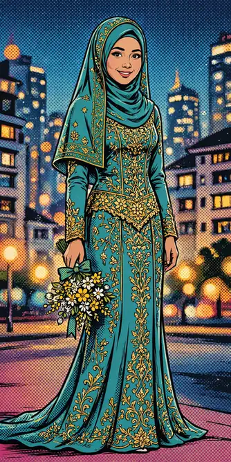
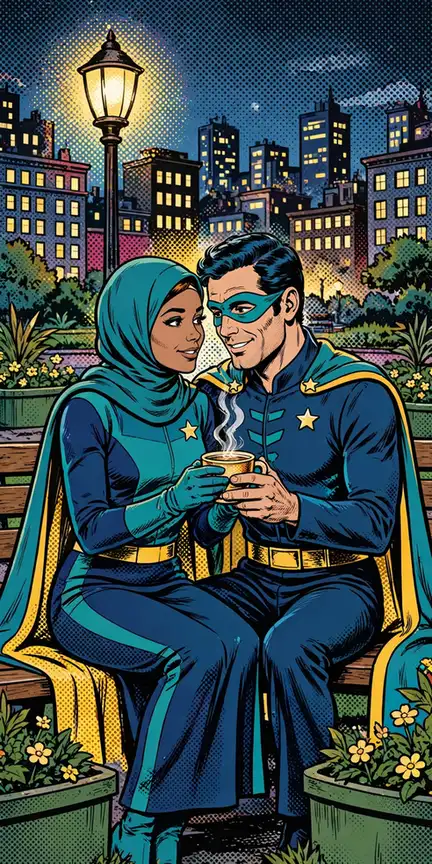
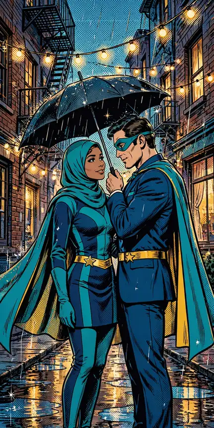
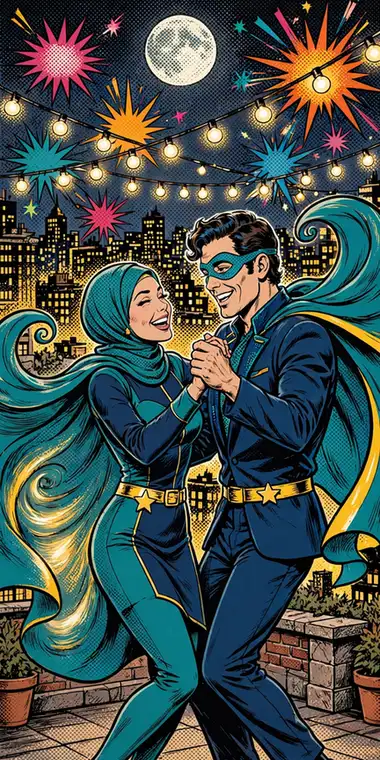
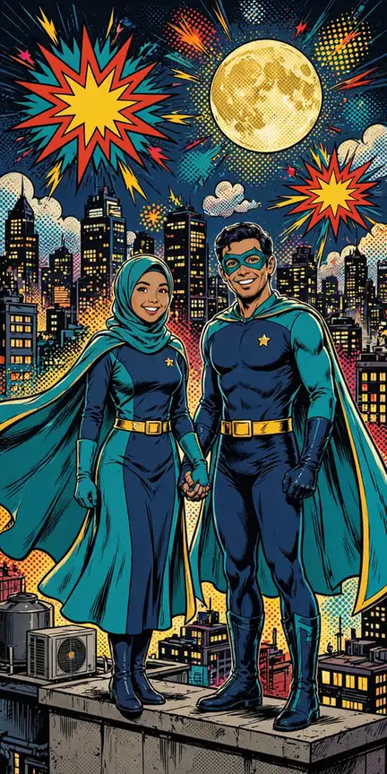
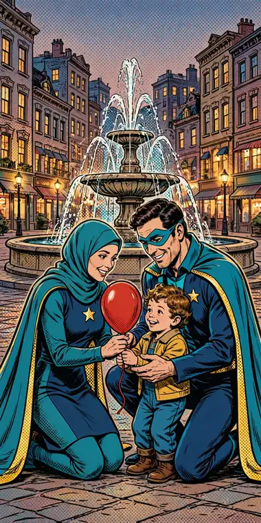
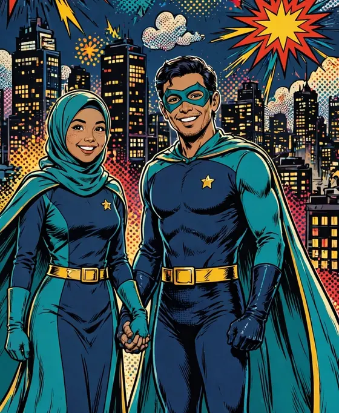
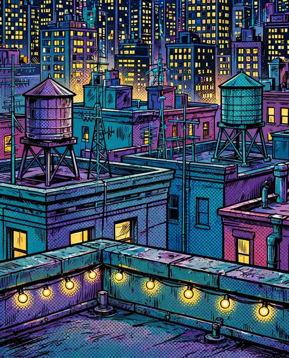

MALAM PALING BERSEJARAH DI KOTA INI
Dari atap tertinggi, dua penjaga kota mengumumkan kabar terbaik tahun ini
“Dan di antara tanda-tanda kebesaran-Nya ialah Dia menciptakan pasangan-pasangan untukmu agar kamu cenderung dan merasa tenteram kepadanya, dan Dia menjadikan di antaramu rasa kasih dan sayang.”
QS. AR-RUM : 21
Setiap penjaga kota punya satu tugas terpenting dalam hidupnya. Bagi kami, tugas itu adalah menyatukan dua hati dalam ikatan suci. Dengan penuh syukur, kami mengundang Bapak/Ibu/Saudara/i untuk hadir dan memberi doa restu pada hari bahagia kami.
DUA PENJAGA, SATU SINYAL
Perkenalkan dua penjaga Kota Kencana yang akan menikah

Meyzsa Putri Ananda
Putri dari
Bapak H. Muhammad Ridwan
& Ibu Hj. Siti Aminah
Ahmad Fahrezzi Pratama
Putra dari
Bapak H. Bambang Sutrisno
& Ibu Hj. Ratna Dewi
Di atap kota, tempat kisah kami bermula — memandang sinyal hati yang sama.
RUTE PATROLI LINTAS DISTRIK
Ikuti garis emas di peta kota — empat pemberhentian menuju rumah

DISTRIK PERTAMABerawal dari pertemuan sederhana di perpustakaan kampus dekat jembatan kota — obrolan hari itu menjadi pemberhentian pertama rute kami.

PATROLI BERDUADi hadapan keluarga tercinta, Fahrezzi menyampaikan niat sucinya tepat saat lonceng menara jam berdentang. Dengan restu kedua orang tua, Meyzsa menerimanya dengan hati berbunga-bunga.
Persiapan demi persiapan kami jalani bersama — dua keluarga saling mengenal di taman kota, menyatukan cerita dan doa, hingga hari bahagia terasa kian dekat.

MARKAS SELAMANYASabtu, 12 Juni 2027 — rute patroli berakhir di pemberhentian terakhir: rumah. Kami mohon doa restu agar langkah ini diberkahi hingga selamanya.
Linimasa & teks kisah di atas adalah contoh untuk tampilan tema.
MENARA JAM BERDETIK
Lonceng menara akan berdentang pada hari bahagia
Sabtu, 12 Juni 2027 — Jakarta
Akad Nikah
Masjid Agung Al-Azhar
Jakarta Selatan
Resepsi
The Ritz-Carlton Jakarta, Pacific Place
Jakarta Selatan
Dresscode Tamu
Berkenan hadir dengan nuansa warna berikut
Panduan contoh: busana formal atau semi-formal dengan nuansa di atas akan menyatu dengan suasana kota malam acara. Terima kasih atas pengertiannya.
Denah & Info Lokasi
Alamat lengkap & patokan menuju venue (contoh)
Akad Nikah — Masjid Agung Al-Azhar
Jl. Sisingamangaraja No. 1, Kebayoran Baru, Jakarta Selatan.
Patokan: kompleks Al-Azhar di sisi jalan utama Sisingamangaraja, mudah dijangkau kendaraan pribadi maupun transportasi umum. Area parkir tersedia di sekitar kompleks; tamu disarankan tiba ±30 menit lebih awal.
Resepsi — The Ritz-Carlton Jakarta, Pacific Place
Jl. Jend. Sudirman Kav. 52–53, SCBD, Senayan, Jakarta Selatan.
Patokan: berada di kawasan SCBD, terhubung dengan Pacific Place Mall; masuk melalui lobi utama hotel. Area parkir tersedia di gedung mal; tamu disarankan tiba ±30 menit lebih awal.
JENDELA-JENDELA YANG MENYALA
Setiap foto adalah satu jendela besar yang menyala di fasad — geser menyusuri gedung & ketuk untuk memperbesar




← geser menyusuri fasad gedung →
TEASER DI LAYAR KOTA
Sepotong kisah kami, diputar untuk seluruh kota
Video teaser — contoh (dirender dari foto pasangan tema ini dengan lagu pengiring; pada undangan asli dapat diganti video prewedding mempelai).
SIARAN LANGSUNG
Untuk keluarga & sahabat yang berhalangan hadir langsung
Resepsi Pernikahan
Sabtu, 12 Juni 2027 · mulai 11.00 WIB
menyesuaikan jam resepsi — The Ritz-Carlton Jakarta, Pacific Place
Tautan contoh (demo) — pada undangan asli, tombol ini mengarah ke siaran langsung mempelai dan aktif menjelang acara.
Abadikan momen bahagia Anda dan tandai dengan tagar resmi kami.
Galeri Tamu
Bagikan momen bahagia Anda selama acara — unggah foto Anda di sini dan tandai juga dengan tagar #MeyzsaFahrezzi.
Jadilah yang pertama membagikan momen — ketuk tombol unggah.
Contoh — foto tersimpan di perangkat ini saja (penyimpanan lokal peramban), tidak diunggah ke server.
BUKU LAPORAN WARGA KOTA
Konfirmasi kehadiran & tuliskan laporan doa terbaik Anda di pos penjaga
Fitur demo pada contoh undangan ini — laporan tersimpan hanya di perangkat Anda dan tidak terkirim ke server.
GERBANG CHECK-IN
Pindai kode QR ini atau isi buku tamu saat tiba di lokasi
Kode QR membuka halaman undangan yang sedang Anda baca — tunjukkan kepada penerima tamu saat check-in.
Fitur demo pada contoh undangan ini — data check-in tersimpan hanya di perangkat Anda.
TANDA KASIH
Doa restu Anda adalah hadiah terindah. Bagi yang berkenan memberi tanda kasih:
Nomor di atas adalah contoh untuk keperluan demo tampilan undangan.
Kediaman Mempelai Wanita
Jl. Melati Indah No. 12, Kebayoran Baru,
Jakarta Selatan 12120 (alamat contoh)
TURUT MENGUNDANG
Segenap keluarga besar kedua mempelai
Keluarga Mempelai Wanita
Keluarga Besar Ridwan — Jakarta
Keluarga Besar Aminah — Bogor
Beserta segenap kerabat & handai tolan
Keluarga Mempelai Pria
Keluarga Besar Sutrisno — Jakarta
Keluarga Besar Dewi — Tangerang
Beserta segenap kerabat & handai tolan
Susunan keluarga di atas adalah contoh untuk tampilan tema.
Merupakan suatu kehormatan dan kebahagiaan bagi kami beserta keluarga apabila Bapak/Ibu/Saudara/i berkenan hadir dan memberikan doa restu kepada kedua mempelai.
KAMI YANG BERBAHAGIA
…dan sinyal hati pun menyala selamanya di atas Kota Kencana.
Undangan digital contoh “Pahlawan Kota” oleh UndangYa! — seluruh nama, tanggal, dan nomor adalah data contoh. Kota Kencana adalah kota fiktif; dua penjaga berjubah pada tema ini adalah sosok generik original tanpa lambang, nama, atau kostum waralaba mana pun.
Musik latar: “Petals on the Stone Floor”.